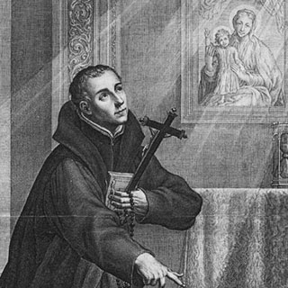
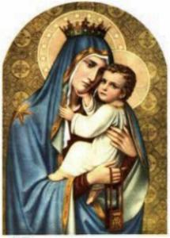
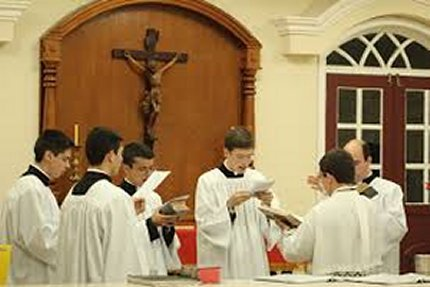
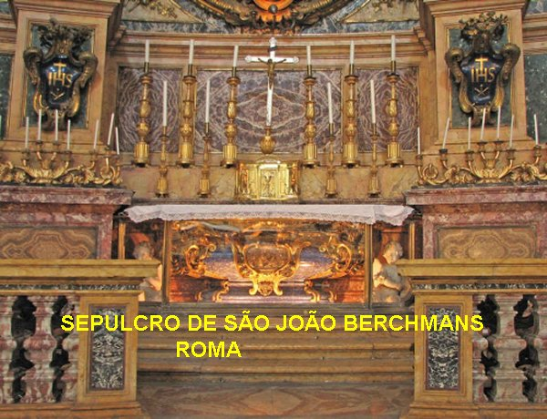

“DOENÇA E MORTE”

DEVOÇÃO A NOSSA SENHORA
Em 1620, no último ano de sua vida, escreveu com seu próprio sangue um voto em defesa da “IMACULADA CONCEIÇÃO DE MARIA”. Esse belo documento se conserva num Relicário de vidro no Colégio São João Berchmans em Bruxelas, na Bélgica. Esta afirmação veemente do Santo serviu no futuro de inspiração ao Papa Pio IX, que lendo e meditando sobre os dizeres do texto, justamente dois séculos depois de João ter escrito aquelas preciosas e verídicas afirmações, determinou a proclamação do “Dogma da IMACULADA CONCEIÇÃO DA VIRGEM MARIA”.
E por outro lado, ele tanto amava NOSSA SENHORA que se manifestava assim:“Se amo MARIA, nossa MÃE SANTÍSSIMA, estou seguro da minha salvação, de minha perseverança no estado religioso, e obterei de meu DEUS tudo o que desejo”.
TERRÍVEL DOENÇA DO PULMÃO

Todavia a sua saúde decaía verticalmente. Ele lutava como um leão para salvar as aparências. Nos estudos continuava firme, estudando e demonstrando conhecimento. Mas não tinha maior vigor. Os colegas e os professores observavam com bastante preocupação.
E assim, completamente debilitado interiormente, no mês de Julho prestou com o maior esforço todos os estudos, conseguindo um grande êxito no exame conclusivo do ano de filosofia. E seu êxito foi tão grande, que em princípios de Agosto, designado pelos superiores, que até então, nada haviam suspeitado sobre a sua doença, e o mandou, representando o Colégio Romano na defesa de sua tese, apresentando-a no Colégio Grego. E procedeu com tanto brilho que causou total admiração ao auditório, que com muita surpresa e perplexidade o aclamou generosamente. Mas João não estava bem, na volta para o Colégio, foi acometido de uma violenta febre. O Padre Reitor o enviou imediatamente para a enfermaria de onde nunca mais saiu.
VINDA DO MÉDICO
No dia seguinte, em 6 de agosto de 1621, João continuava com febre alta. O Padre Reitor mandou chamar o médico, que veio imediatamente. As esperanças de vida foram se perdendo com o passar das horas. O médico chegou e imediatamente foi examiná-lo. Descobriu nele uma inflamação pulmonar irrecuperável. Ele já estava ficando sem forças.
MORTE DO JOÃO

OS FIÉIS VIERAM
Uma grande quantidade de fiéis foram se despedir dele no Colégio Romano. Enquanto providenciavam uma veste nova para ele, sua batina foi dividida em quase uma centena de pedaços, precioso “souvenir” que o povo feliz levou para casa.
João foi um belo exemplo de como viver alegremente no SENHOR; ele teve também preciosas experiências místicas e foi tocado pela graça Divina, mas na verdade, o que mais o caracterizava era a sua profunda compaixão com o próximo, e primordialmente, a sua carinhosa e ardente devoção à Sagrada Eucaristia e à SANTÍSSIMA VIRGEM MARIA.

SEPULTAMENTO
Foi sepultado na Igreja Romana de Santo Inácio de Loyola, na Capela SS. Annunziata. Uma relíquia com uma parte do seu coração foi levada para Louvain, permanecendo num magnífico deposito de vidro, numa Igreja Jesuíta, dedicada a São Miguel de Lovânio.
BEATIFICAÇÃO E CANONIZAÇÃO
João Berchmans foi “BEATIFICADO” no dia 9 de Maio de 1865, pelo Papa Pio IX, no Vaticano. No dia 15 de Janeiro de 1888, foi “CANONIZADO” pelo Papa Leão XIII, também no Vaticano, com a presença de muitos fiéis. Suas relíquias repousam numa magnífica tumba na Igreja de Santo Inácio, em Roma, junto aos Santos de sua devoção durante a sua vida: São Luiz Gonzaga e Santo Inácio de Loyola.
SUA MEMÓRIA
Sua memória litúrgica era celebrada em 26 de novembro, mas em 1969, o Papa Paulo VI a transferiu para o dia 13 de agosto.